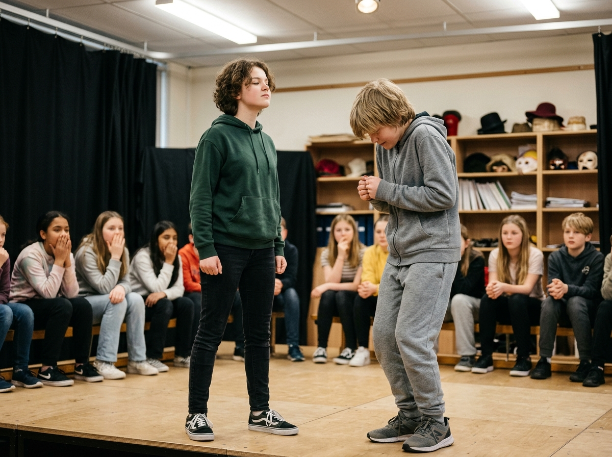

Pilot Exemplar: Future Cities & Sustainable Urban Planning (13–16h, STEM & Climate Resilience).
Drama & Social Awareness · 1-Day Activity #9
1-Day Drama / Teambuilding
Grade Level: Grade 7–9
Resources: None (optional: playing cards)
Recommended Duration: 60–75 minutes
Inquiry Framework: Drama & Social Awareness

Understanding status dynamics gives adolescents conscious control over their body language and social interactions. By making status visible and playable, students develop empathy for how physical presence affects social hierarchies — and gain tools to modulate their own status in interviews, presentations, conflict resolution, and peer interactions.
Students explore the concept of social 'status' — high-status (confident, space-owning) vs. low-status (small, apologetic) body language — through progressive drama exercises. Starting with status walks, moving to paired status scenes, and culminating in a 'status party' where each student is assigned a secret status level (1–10) and must act accordingly while the audience guesses their number.
These core framing questions anchor student curiosity and guide research throughout the project arc:
"What specific body language signals communicate power, confidence, or authority — and can they be learned?"
"How does status affect who gets heard in a conversation, a classroom, or a society?"
"When is it useful to raise or lower your status deliberately, and when might it be harmful?"
Explicit provincial curriculum outcomes central to unit design:
Integrated Subject Areas: Drama, ELA / FLA, Healthy Living, Social Studies
To prepare students for open-ended problem solving, teachers deliver direct mini-lessons in key foundational techniques:
Teacher demonstrates extreme high-status (owns the room, slow movements, direct eye contact) and extreme low-status (small, fidgety, avoids eye contact). Class identifies specific physical signals.
Important distinction: status is a performable behaviour, not a fixed trait. A shy person can play high-status; a confident person can play low-status. This is about the SKILL of modulating presence.
| Phase / Stage | Duration | Instructional Activities & Milestones |
|---|---|---|
| Status Spectrum Demo | 5–8 min | Teacher demonstrates high-status (10) and low-status (1) walks. Class identifies specific physical signals: eye contact, pace, posture, gesture size, voice volume. |
| Status Walk Exercise | 10 min | Students walk around the room. Teacher calls numbers 1–10; students adjust their body language to match. Practice the full spectrum. |
| Status Pair Scenes | 12–15 min | Pairs receive scenario cards (job interview, teacher-student meeting, two friends). Each is assigned a status number. Improvise a 60-second scene staying in status. |
| Status Switch | 8–10 min | Same pairs, same scenario, but status numbers swap. Discussion: How did it feel? How did the scene change? |
| Status Party | 12–15 min | Each student draws a secret card (1–10). All attend a 'party' and must behave at their status level. Audience watches and guesses each person's number. |
| Debrief & Real-World Connection | 8–10 min | Discussion: When do you play high or low status in real life? When might you want to change your status deliberately (presentations, conflicts, interviews)? |
How this learning experience deliberately engages the whole adolescent learner:
Analysing micro-behaviours that signal social status; predicting how status dynamics affect scene outcomes.
Practising unfamiliar social registers; developing empathy for how body language affects perception.
Full-body engagement: posture, gait, gesture size, eye contact patterns, and spatial relationships.
Formative Checkpoints: Teacher observes: Can students physically embody different status levels? Can they articulate the specific signals they're using?
Peer Feedback: Status Party audience guessing provides direct feedback on whether a student's physical choices are readable.
Summative Criteria: Reflection journal: Describe one situation where you could deliberately raise or lower your status to communicate more effectively.
Audience Sharing: The Status Party is the culminating performance — each student's secret number is revealed after the audience guesses, generating discussion about which signals were most readable.
"Frame this activity carefully: status is a SKILL, not a judgement. Avoid language that equates high-status with 'good' or low-status with 'bad.' Both are useful in different contexts. This activity can be powerful for students who struggle with social confidence, as it gives them explicit tools rather than vague advice like 'be more confident.'"
Pilot Exemplar: Future Cities & Sustainable Urban Planning (13–16h, STEM & Climate Resilience).
Integrated Learning Time (ILT) empowers junior high schools to implement cross-curricular inquiry, build provincial continuum skills, and foster student agency.